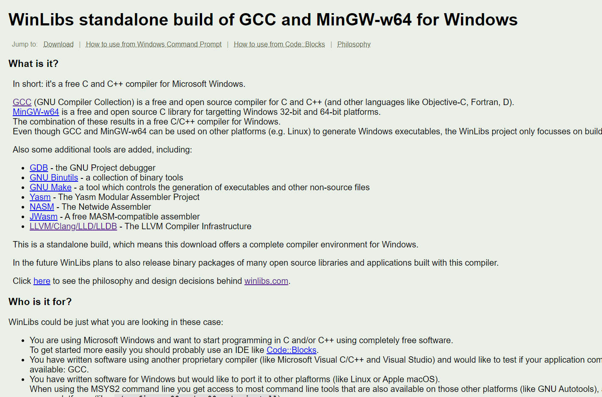
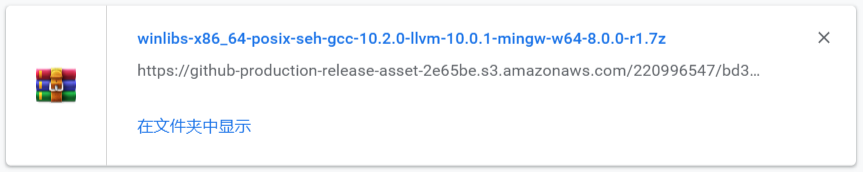
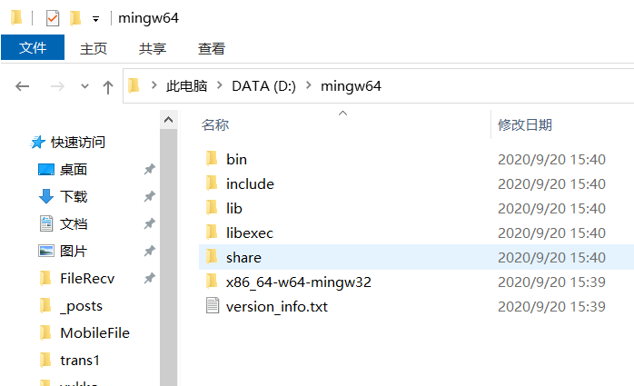
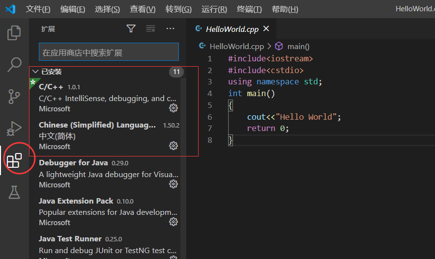
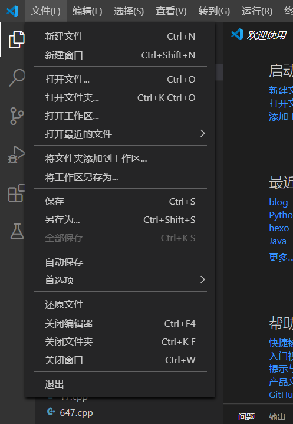
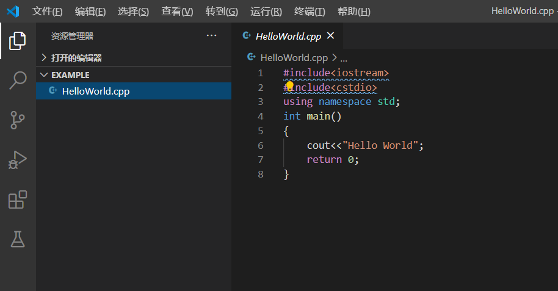
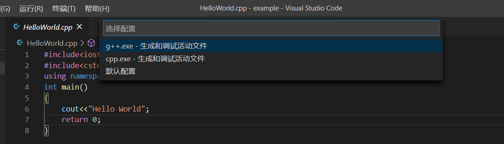

GCC + vscode 的简易配置，快速摆脱DEV-Cpp
插播一下日常
最近刚看完超炮3，超炮里我果然还是更喜欢食蜂操祈
毕竟心理掌握メンタルアウト 还是很令人羡慕的能力

大赞超炮
Compiler and PATH
这里先介绍一个方便下载编译的现代的编译器的网站
(不像某DEV-C++还用远古的GCC4.9)
WinLibs standalone build of GCC and MinGW-w64 for Windows
下载GCC Binary
在标题下面点击Download，然后直接选择有LATEST标志的就可以了
这里选择without LLVM/Clang/LLD/LLDB里的7-Zip archive下载完后会得到如下样式的文件
解压到任意一个不带中文字符的目录，这里我直接解压到D盘了
配置PATH
在环境变量里面添加你解压mingw64的地方，再在后面加上bin
类似于之类的D:\mingw64\bin
这样只要你在PowerShell中输入gcc有提示就说明你成功了
Visual Studio Code配置
安装中文和C/C++插件
选择一个存你写的代码的文件夹
在左上角文件处选择打开文件夹
注意文件夹路径不要存在中文，要不然gdb调试会出问题
先写个HelloWorld
然后按住Ctrl + F5会出现如下界面
这里选择 C++ (GDB/LLDB) 然后选择 g++生成
然后会在你的文件夹里的创建和一个.vscode文件夹里面有launch.json和tasks.json文件
c_cpp_properties.json的配置
按Ctrl + Shift + P呼出命令框
输入config 出现下图，选择C/C++ 编辑配置(UI)
调整下图3个位置为以下选项(使用GNU GCC的同学)
结束
保存后重启以下vscode，这样应该就完全配置完了
点开cpp文件后直接按Ctrl + F5运行，第一次运行会以调试模式运行，点上方停止再按一次Ctrl + F5就行了